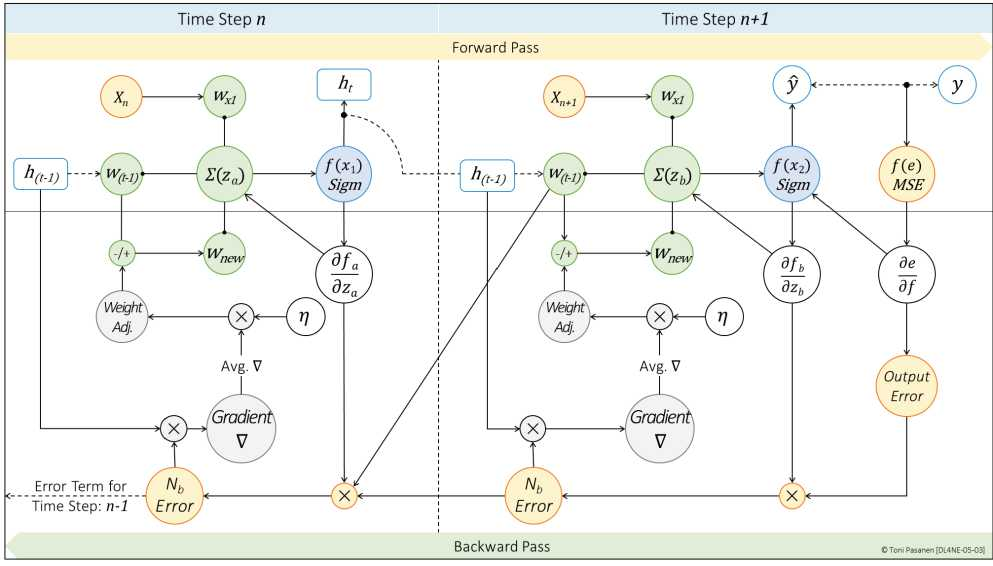
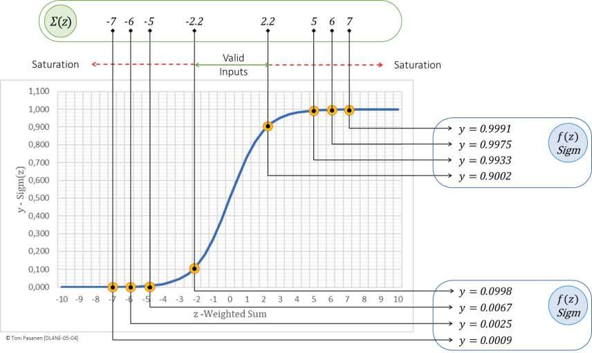

Backprop Through Time：把展开的每个时间步看成一层，误差从最后时刻倒推回第一时刻，每步都要乘激活导数与 W_h。若几十上百步连乘，小数×小数→趋零，大数×大数→爆炸。训练长序列极不稳定。
书 p119-121 指出：tanh/Sigmoid 导数 ≤1（Sigmoid 最大 0.25），多步连乘迅速衰减，早期的输入对后期梯度几乎无贡献——网络“忘记”了远古历史。类比：口口相传几十手，首句话已失真。饱和（输出挤在两端、斜率≈0）会加剧此问题。
RNN 长序列训练 = 长时间步的同步+大显存占用，对网络是持续的中等流量 + 周期性同步。若模型总忘事，别只调网，要先怀疑模型结构——这正是 Ch6 LSTM 登场的理由。


解释“口口相传”与梯度消失的对应关系，写出 tanh 导数上界 1 的含义。